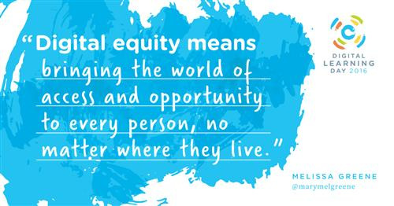
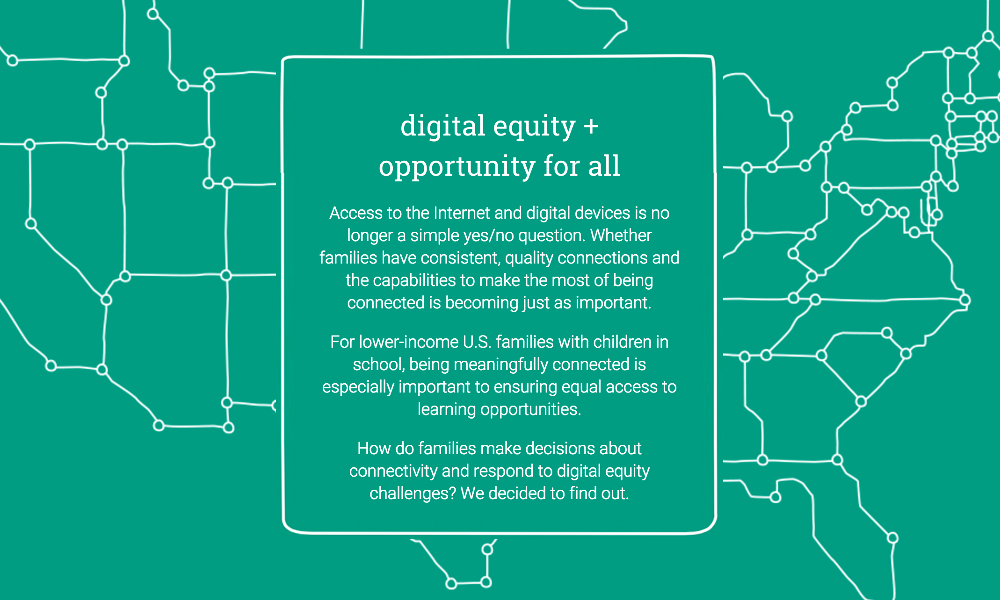

Digital Equity
Digital equity is a crucial part of Digital Ethics. Digital equity is the social-justice goal of ensuring that everyone in our society has equal access to technology tools, computers and the Internet. Even more, it is when all individuals have the knowledge and skills to access and use technology tools, computers and the Internet
It seeks to ensure all residents and neighborhoods have the information technology capacity needed for civic and cultural participation, employment, lifelong learning, and access to essential services. Working toward digital equity involves intentional strategies and investments to reduce and eliminate historical barriers to access and use technology. Digital equity can:
Offer better quality of life and empower communities through civic and cultural participation.
A to connect through social networking and mobile devices Provide everyone the opportunity to use necessary health, consumer, legal, and social services.
Create educational and economic opportunities that lead to economic success for all residents.
Clear the way for more self-sufficient residents, community-based organizations, and small businesses.
